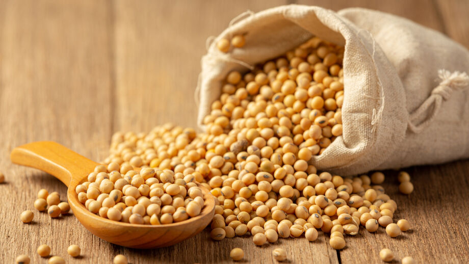

Soja
A soja é uma planta muito importante, conhecida por suas sementes ricas em proteínas e óleo. Ela é amplamente cultivada em várias partes do mundo, especialmente na América do Sul, Estados Unidos e Ásia. A soja é versátil e utilizada na produção de alimentos como tofu, leite de soja, e também em produtos industrializados. Além disso, ela desempenha um papel fundamental na agricultura, ajudando na fixação de nitrogênio no solo, o que melhora a fertilidade da terra. É uma cultura que contribui tanto para a alimentação quanto para a economia global!